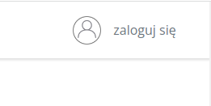
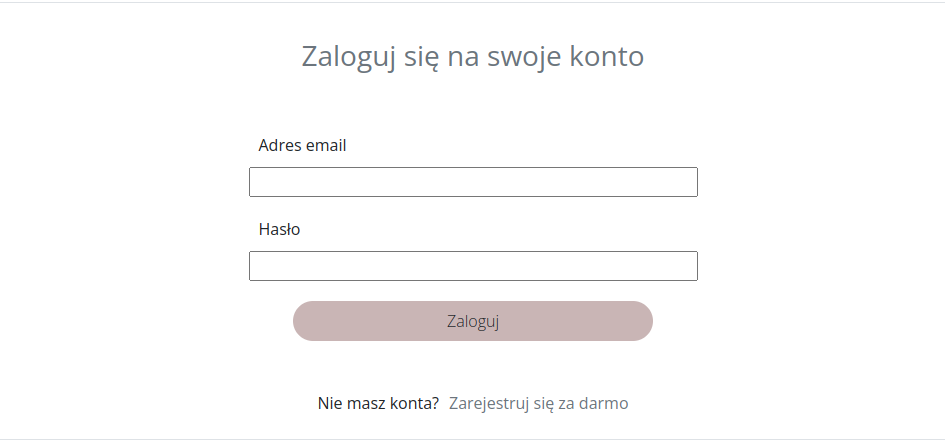
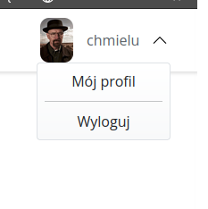
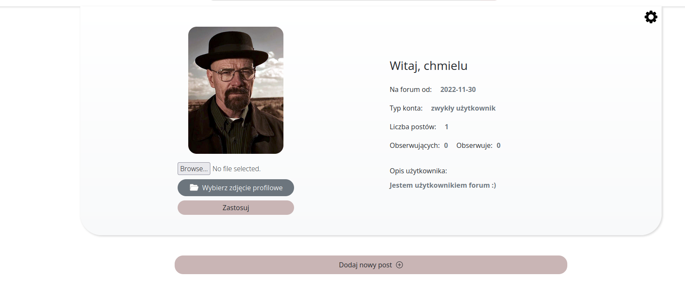
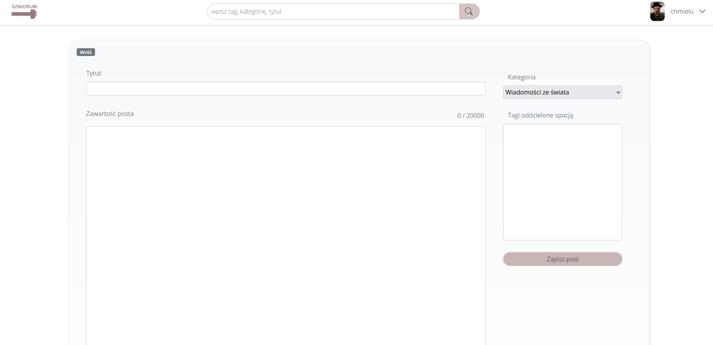
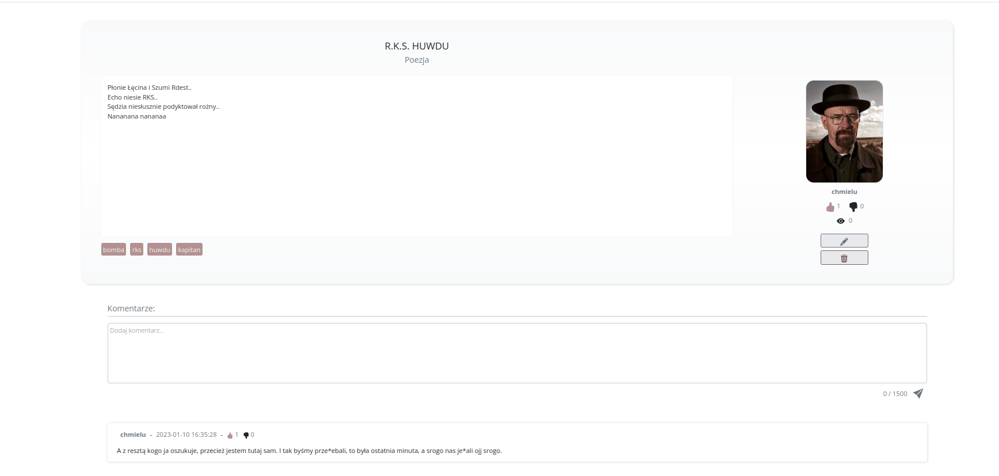

Wstęp
Witamy w dokumentacji użytkownika forum internetowego Szniorum.
Copyright (c) 2023, WiktorProsowicz
Redistribution and use in source and binary forms, with or without modification, are permitted provided that the following conditions are met:
Redistributions of source code must retain the above copyright notice, this list of conditions and the following disclaimer.
Redistributions in binary form must reproduce the above copyright notice, this list of conditions and the following disclaimer in the documentation and/or other materials provided with the distribution.
THIS SOFTWARE IS PROVIDED BY THE COPYRIGHT HOLDERS AND CONTRIBUTORS "AS IS" AND ANY EXPRESS OR IMPLIED WARRANTIES, INCLUDING, BUT NOT LIMITED TO, THE IMPLIED WARRANTIES OF MERCHANTABILITY AND FITNESS FOR A PARTICULAR PURPOSE ARE DISCLAIMED. IN NO EVENT SHALL THE COPYRIGHT HOLDER OR CONTRIBUTORS BE LIABLE FOR ANY DIRECT, INDIRECT, INCIDENTAL, SPECIAL, EXEMPLARY, OR CONSEQUENTIAL DAMAGES (INCLUDING, BUT NOT LIMITED TO, PROCUREMENT OF SUBSTITUTE GOODS OR SERVICES; LOSS OF USE, DATA, OR PROFITS; OR BUSINESS INTERRUPTION) HOWEVER CAUSED AND ON ANY THEORY OF LIABILITY, WHETHER IN CONTRACT, STRICT LIABILITY, OR TORT (INCLUDING NEGLIGENCE OR OTHERWISE) ARISING IN ANY WAY OUT OF THE USE OF THIS SOFTWARE, EVEN IF ADVISED OF THE POSSIBILITY OF SUCH DAMAGE.
Logowanie/Rejestracja
Po wejsciu na forum, pierwszą czynnością jaką należy zrobić aby móc dodawać posty, jest zalogowanie się.
Aby to zrobić, należy kliknąć w okienko które widnieje w prawym górnym rogu.

Następnie zostaniemym przeniesieni do formularza logowania, bądź jesli nie mamy jeszcze konta, możemy kliknąć w reflink na dole formularza: Zarejestruj się za darmo.

Wtedy zostaniemy przeniesieni do forumlarza rejestracji, który musimy wypełnić aby założyć konto.
Po wypełnieniu formularza, będziemy mogli zalogować się na nasze konto.
Edycja konta
Po utworzeniu konta, możemy je edytować. Należy ponownie najechać na okienko w prawym górnym rogu - tym razem będzię widniała tam nasza nazwa użytkownika. Po najechaniu na okienko, rozwinie się menu z którego możemy wybrać: * Mój profil * Wyloguj
Wybieramy pierwszą opcje.

Zostajemy przeniesieni do panelu naszego konta.

W panelu wyświetlają się podstawowe informacje na temat naszego konta.
Aby je edytować, należy kliknąć w ikonke trybiku w prawym górnym rogu. Zostaniemy przeniesieni
do panelu edycji, gdzie możemy edytować nasz opis lub zmienić hasło.
Dodatkowo, możemy dodać zdjęcie profilowe naszego konta. Wystarczy, że będziemy je mieć u siebie lokalnie. Aby to zrobić, należy kliknąć w przycisk: Wybierz zdjęcie profilowe. Po wybraniu należy zatwierdzić przyciskiem: Zastosuj - zostanie ono wtedy skopiowane do bazy danych i zapisane jako nasze zdjęcie.
Dodawanie postów
Aby dodać post należy być zalogowanym użytkownikiem.
Aby dodać post, należy wejść do panelu naszego konta (krok opisany wyżej: Edycja konta).
Następnie, należy kliknąć w przycisk Dodaj nowy post, zostanie przeniesieni do panelu tworzenia nowego postu.
 Aby dodać post należy: * wybrać kategorie * dodać tytuł postu * dodać treść postu * (opcjonalnie) dodać tagi oddzielone spacją Na koniec wystarczy zapisać post.
Dodawanie komentarzy
Aby dodać komentarz pod postem należy być zalogowanym użytkownikiem.
Aby dodać komentarz musimy wejść w jakiś post, następnie w dolnej części postu umieszczamy treść
komentarza i klikamy ikonkę wyślij w prawym dolnym rogu.
Dodatkowo jako autor postu możemy go usunąć lub edytować.

Dodatkowe informacje
- Na forum mamy dostępną wyszukiwarkę z której możemy korzystać szukająć po tytułach postów lub kategoriach
- Z lewej strony panelu głównego mamy dostępne najpopularniejsze kategorie, które możemy wybrać klikając w nie
- Aby przeglądać posty nie trzeba zakładać konta
- Możemy "lajkować" posty, dzięki czemu bedą one miały większy "zasięg"
- Możemy również "lajkować" komentarze
Errors
The Kittn API uses the following error codes:
| Error Code | Meaning |
|---|---|
| 400 | Bad Request -- Your request is invalid. |
| 401 | Unauthorized -- Your API key is wrong. |
| 403 | Forbidden -- The kitten requested is hidden for administrators only. |
| 404 | Not Found -- The specified kitten could not be found. |
| 405 | Method Not Allowed -- You tried to access a kitten with an invalid method. |
| 406 | Not Acceptable -- You requested a format that isn't json. |
| 410 | Gone -- The kitten requested has been removed from our servers. |
| 418 | I'm a teapot. |
| 429 | Too Many Requests -- You're requesting too many kittens! Slow down! |
| 500 | Internal Server Error -- We had a problem with our server. Try again later. |
| 503 | Service Unavailable -- We're temporarily offline for maintenance. Please try again later. |